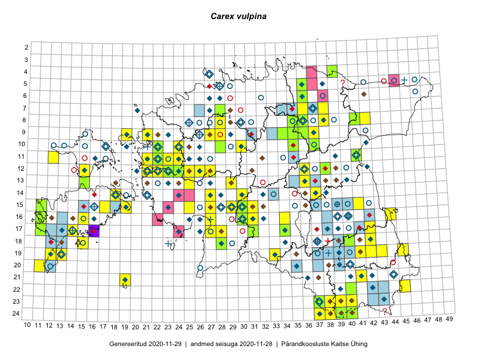

Carex vulpina
Uuendatud: 2016-12-02
Kaardile koondatud taksonid: Carex vulpina L.

Kaart põhineb 85 kirjel, neist vaatlusi 82 ja eksemplare 3. Taksonit on leitud 64 ruudust.
Kuvatud viited 20 esimesele andmebaasikirjele, ülejäänud PlutoFis
- Toomas Kukk, Eerik Leibak: 2015-08-10: 13-15: ala
- Peedu Saar, Liina Oja: 2015-06-09: 17-28: ala
- Peedu Saar, Liina Oja: 2015-06-12: 12-36: ala
- Toomas Kukk, Eerik Leibak: 2015-07-29: 16-44: ala
- Tiit Hallikma, Toomas Kukk: 2015-06-10: 15-30: ala
- Toomas Kukk, Tiit Hallikma: 2015-06-10: 15-31: ala
- Tiit Hallikma, Toomas Kukk, Indrek Tammekänd: 2015-06-08: 14-27: ala
- Tiit Hallikma, Toomas Kukk: 2015-08-27: 12-21: ala
- Indrek Tammekänd, Katrin Aavik: 2015-06-15: 13-25: ala
- Jana-Maria Habicht, Ester Valdvee, Kirke Pilvik: 2015-07-14: 08-35: ala
- Jana-Maria Habicht, Ester Valdvee, Kirke Pilvik: 2015-07-25: 09-34: ala
- Jana-Maria Habicht, Ester Valdvee: 2015-08-15: 09-36: ala
- Eeva-Maria Jeletsky, Tarmo Niitla: 2015-05-17: 14-37: ala
- Eeva-Maria Jeletsky, Tarmo Niitla: 2015-06-27: 11-12: ala
- Oliver Parrest: 2015-07-01: 19-13: ala
- Eeva-Maria Jeletsky, Tarmo Niitla: 2015-07-17: 23-38: ala
- Eeva-Maria Jeletsky, Tarmo Niitla: 2015-07-16: 24-37: ala
- Mari Reitalu, Triin Reitalu: 2014-08-15: 20-11: ala
- Meeli Mesipuu: 2015-06-21: 15-19: ala
- Maret Gerz, Leena Gerz: 2015-08-08: 15-25: ala